UX Case Study · Nonprofit Web Design
Maroon 9 Website Redesign
Led the redesign of a nonprofit website that helps families discover programs, understand impact, and get involved in their community.
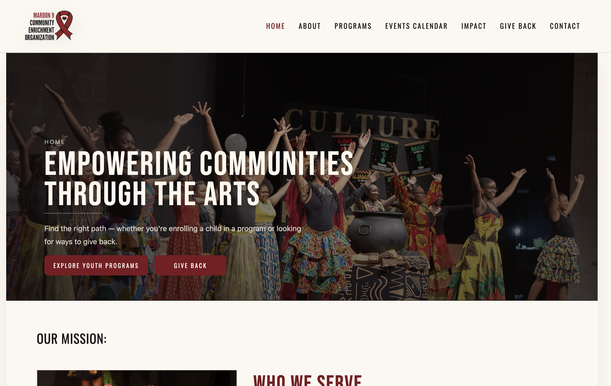
Final homepage redesign — built from scratch in HTML, CSS, and JavaScript. Spring 2026.
Overview
Maroon 9 Community Enrichment Organization is a Fort Worth nonprofit that provides youth development, theatre arts education, and sickle cell advocacy programs.
The existing website made it difficult for users to discover programs, understand the organization's impact, and find clear next steps for getting involved.
As Project Lead on a five-person interdisciplinary team, I led the redesign from research through implementation. My responsibilities included stakeholder interviews, surveys, information architecture, wireframing, navigation design, usability testing, and front-end development.
I led the design and development of the homepage, navigation system, Programs section, and three program subpages, focusing on improving program discovery, comparison, and user engagement.
The Design Challenge
How might we redesign Maroon 9's website so that parents, youth, donors, and community members can quickly discover programs, understand the organization's mission, and take meaningful action regardless of device or digital literacy?
The Problem
The original website had not kept pace with the organization's growth. Most content was concentrated on a single homepage, making it difficult for users to quickly find relevant information.
Navigation reflected internal organizational terminology rather than user goals, while key actions such as enrolling, donating, and volunteering were difficult to find or led users away from the website entirely.
Original Website
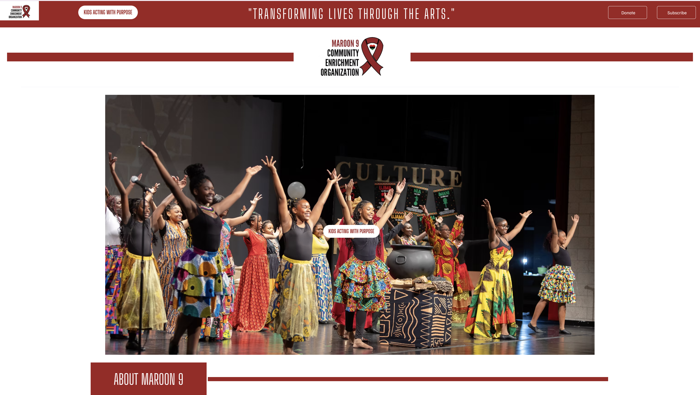
Homepage concentrated nearly all content in one place with no clear hierarchy.
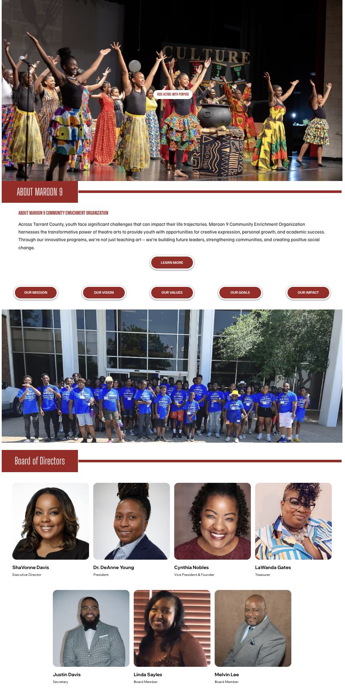
Dense text blocks with no scannable structure made it hard to find key information quickly.
Original Site Architecture
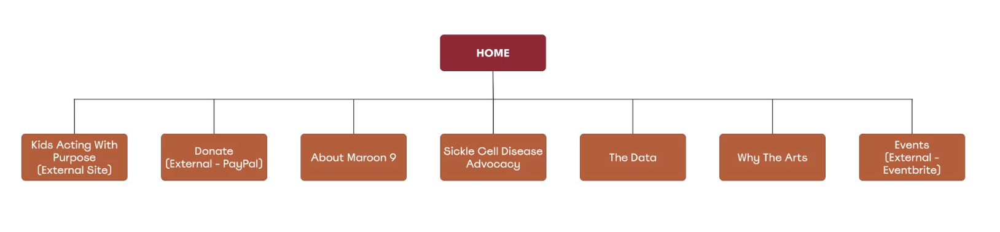
Everything lived under one flat homepage. KAWP linked to an external site; Donate linked to PayPal. No internal program pages existed.
Stakeholder interviews, surveys, and an audit of the existing website revealed four recurring usability issues that affected nearly every visitor journey.
No Program Clarity
Programs had no dedicated pages. Parents couldn't compare options or understand what their child would actually do.
Navigation Gaps
Navigation and content organization did not align with common user goals, making important information harder to find.
Hidden Key Actions
Donate and volunteer CTAs were either buried, broken, or sent users to external platforms, creating drop-off at the most critical moments.
Content Overload
Important information was spread across long, text-heavy pages, making it difficult to quickly scan and find relevant information.
My Contributions
As Project Lead, I contributed across research, information architecture, UX design, and front-end development. These were the areas I personally owned.
Project Leadership
Led a five-person interdisciplinary team through research, design, and development. Coordinated client communication, organized team deliverables, and helped guide decisions throughout the project.
Information Architecture
Created the sitemap and reorganized content around user goals rather than organizational structure. Developed a clearer navigation system to help users find programs, events, impact information, and ways to get involved.
Programs Experience
Built the Programs overview page and all three program detail pages (KAWP, Page to Stage, Sickle Cell Stars) from scratch — layout, content hierarchy, and CTAs for each.
Interaction Engineering
Designed the Programs page and all three program detail pages (KAWP, Page to Stage, and Sickle Cell Stars). Created comparison-focused layouts, content hierarchy, and clear calls-to-action to help users evaluate programs and take the next step.
Research & Discovery
Before designing anything, we needed to understand the real problems, not just the visible ones. We conducted stakeholder interviews, a communication brief survey, a content audit, and a competitive analysis of comparable organizations.
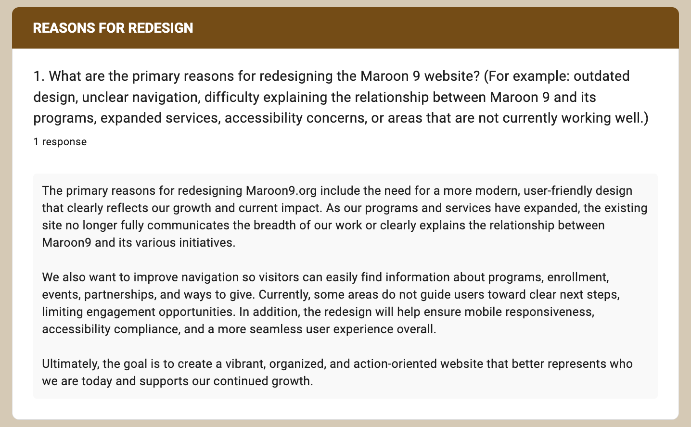
The communication brief survey gave us direct access to organizational priorities, audience needs, and content gaps — straight from the client.
What the Research Told Us
Parents need to compare programs fast. Most visit on mobile with limited time. Dense text blocks and no comparison structure meant they left without finding what they needed.
Navigation did not support user goals. Labels such as "Sickle Cell Disease Advocacy" and "The Data" reflected organizational topics rather than common user tasks like finding programs, volunteering, or learning about impact.
Key actions were broken or buried. Donate linked to PayPal. KAWP linked to an external site. Volunteer pages didn't exist. Users had no clear path to action.
Content lacked clear hierarchy. Important information existed, but was spread across long pages and competing sections. Users had to work to determine what was most important and where to go next.
Mobile-first was non-negotiable. The client confirmed most of their audience accesses the site by phone. Responsive design and mobile navigation weren't a nice-to-have — they were required.
Understanding Our Users
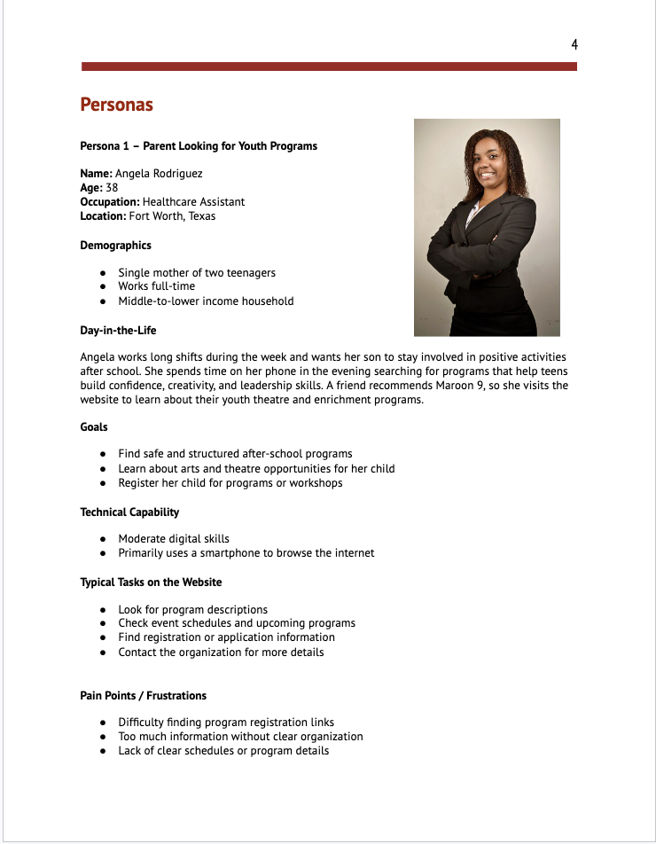
Angela — parent persona. Browses on mobile, limited time, needs to evaluate programs quickly.
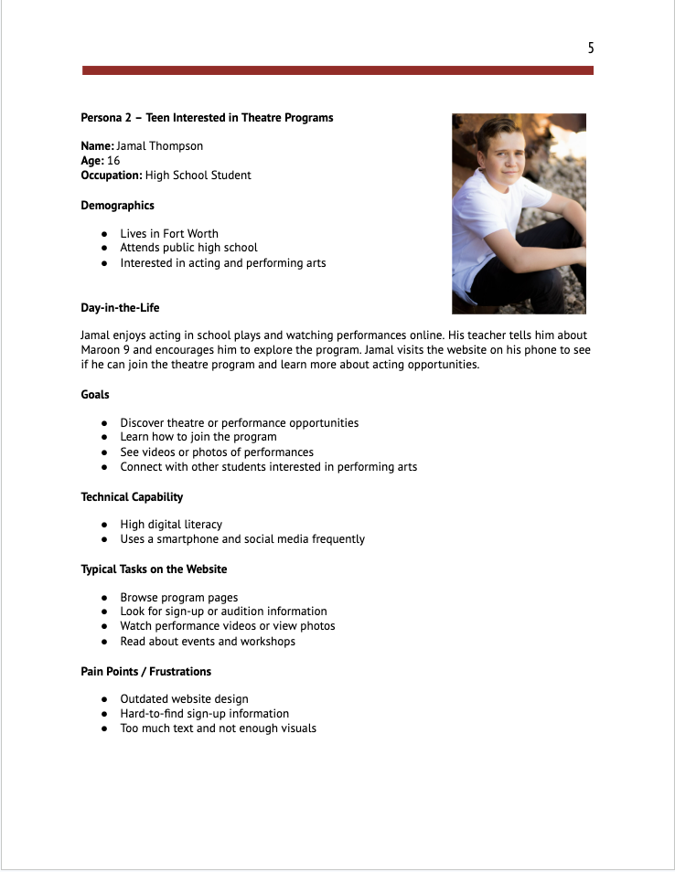
Jamal — student persona. High digital literacy, wants visuals and a clear path to join.
Research identified three primary audience groups: parents and guardians, students and youth participants, and donors, volunteers, and community supporters. These personas helped guide navigation, content organization, and call-to-action placement throughout the redesign. Every decision was evaluated against the needs, goals, and constraints of real users.
Information Architecture
Before: Flat and Org-Focused
Original structure: 7 flat pages, 2 critical actions going off-site, no program hierarchy.
After: Goal-Oriented Hierarchy
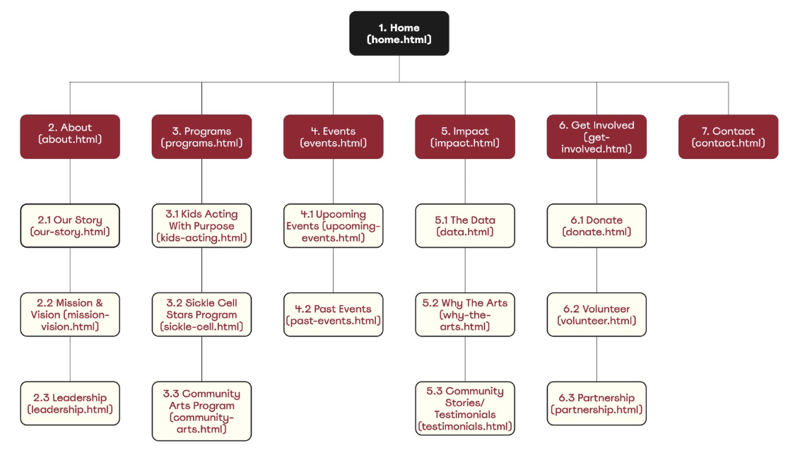
Redesigned structure: 6 goal-oriented sections, dedicated program subpages, all key actions kept on-site.
The core information architecture decision was to organize the site around user goals rather than internal organizational structure. Instead of asking users to interpret Maroon 9's terminology, the new structure helps them quickly find programs, events, impact stories, and ways to get involved.
Each top-level section was designed around a specific user task. Programs received dedicated subpages that made it easier for families to compare options, while key actions like donating, volunteering, and partnerships were given clear pathways within the site rather than sending users to external platforms.
Wireframing
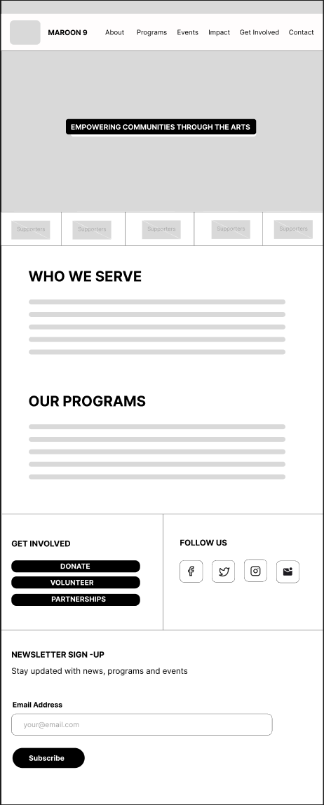
Homepage wireframe — content hierarchy first, visual design second.
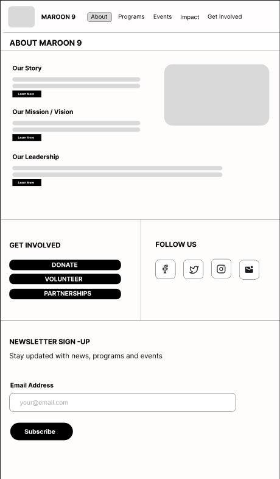
About page wireframe — three focused subsections instead of one dense block.
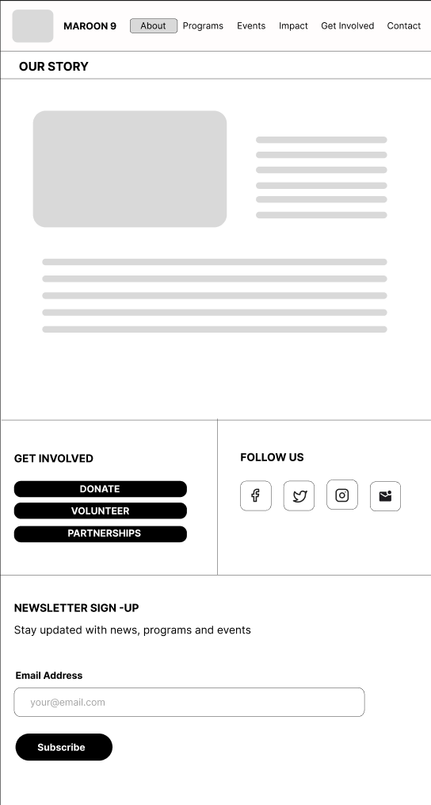
Our Story wireframe — image + text layout for scannable readability.
Before moving into visual design, we used wireframes to test content hierarchy, navigation structure, and page layouts. This stage helped us validate key decisions early, including breaking content into dedicated pages, introducing clearer calls-to-action, and prioritizing mobile usability from the start.
Content Organization
Organized content into clear sections that support scanning and faster information discovery.
CTA Planning
Established consistent action pathways so users could take the next step from any page.
Reduced Overload
Reduced cognitive load by separating content into focused pages with clear purposes.
Mobile-First Layout
Considered mobile navigation and responsive layouts early in the design process.
Mobile Wireframes
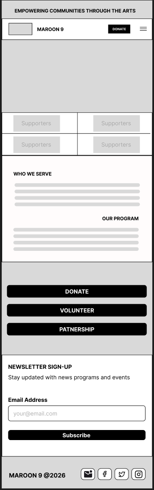
Mobile homepage.
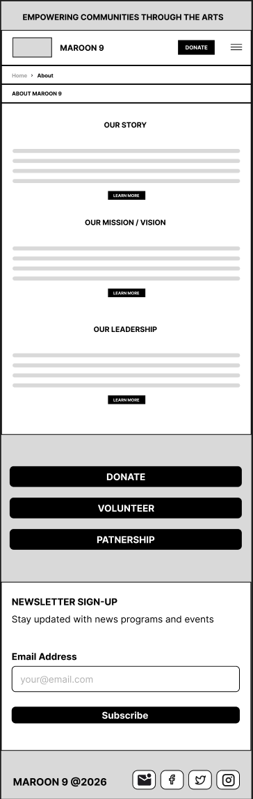
Mobile About page.
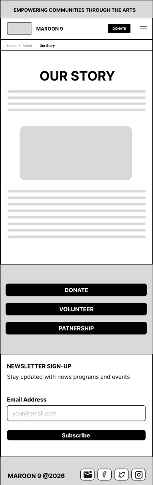
Mobile Our Story page.
Designing the Programs Experience
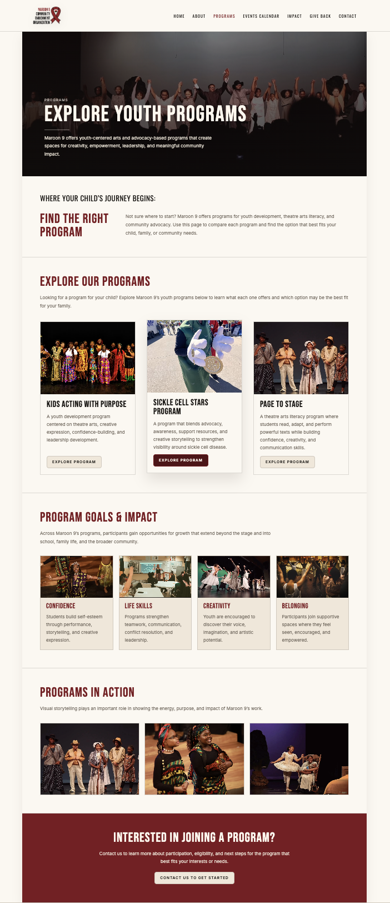
Programs overview page — comparison-focused layout with visual cards and clear calls-to-action.
The Programs section was my primary design focus. Research showed that many parents arrived without knowing which program best fit their child. The original site relied on dense text and offered no clear way to compare options. I redesigned the experience around one goal: helping users make a confident decision in under two minutes.
Guiding Users Toward Action
To support users throughout the decision-making process, I designed a floating call-to-action that appears as users scroll through program information and disappears when they reach the primary CTA at the bottom of the page.
Design Goals
Enable Comparison
Created a comparison-friendly layout that helps users quickly evaluate all three programs before exploring details.
Reduce Cognitive Load
Organized content into clear sections that guide users from understanding options to taking action.
Show the Value
Highlighted outcomes such as confidence, creativity, belonging, and life skills to communicate value beyond participation.
Clear Next Step
Integrated clear calls-to-action throughout the experience so users always knew what to do next.
Interaction Design
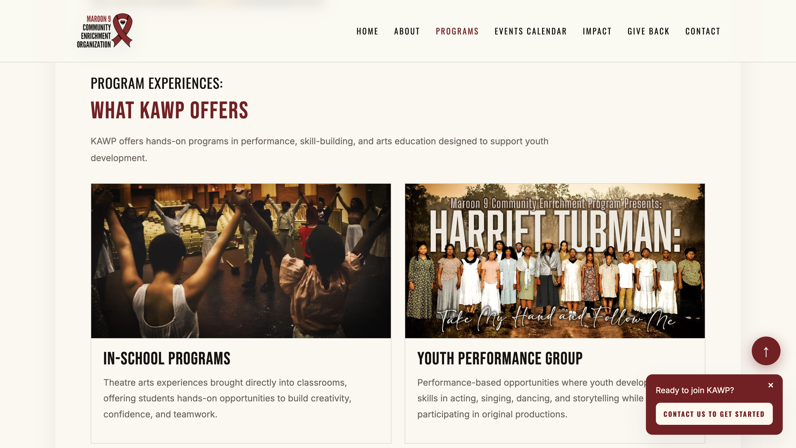
Floating CTA on the KAWP page — appears on scroll, hides when the primary CTA enters view.
Beyond page layouts and content structure, I focused on interaction design: the behaviors that guide users, provide feedback, and reduce friction throughout the experience. Every interaction was designed to support a specific user need identified during research.
Interaction Design Decisions
Research showed users often reached the middle of a page without a clear path forward. To keep key actions accessible throughout the experience, I designed a floating CTA that appears once users begin scrolling and remains available as they explore content.
The CTA automatically hides when the page's primary call-to-action enters view, preventing redundant actions and reducing visual clutter.
Additionally, a back-to-top button was included across the site and shared the same screen space as the floating CTA. To avoid overlap, I positioned the back-to-top button above the CTA and added a dismiss option that allows users to close the CTA when needed. This was particularly important on mobile, where screen space is limited. Once dismissed, the back-to-top button returns to its original position.
When the mobile navigation menu opens, both elements are temporarily hidden to prevent competing actions on smaller screens. Once the menu closes, they automatically return.
Hover Feedback
CAdded hover states to navigation links, buttons, and cards so users could easily identify interactive elements before clicking.
Full-Card Interaction
Made program cards fully clickable instead of limiting interaction to a small button, reducing friction and improving discoverability.
Mobile Navigation
Designed a responsive mobile navigation that keeps key pages accessible while reducing clutter on smaller screens.
Context-Aware UI
Designed floating interface elements that adapt to page position and navigation state, reducing visual clutter while keeping important actions accessible.
Program Detail Pages
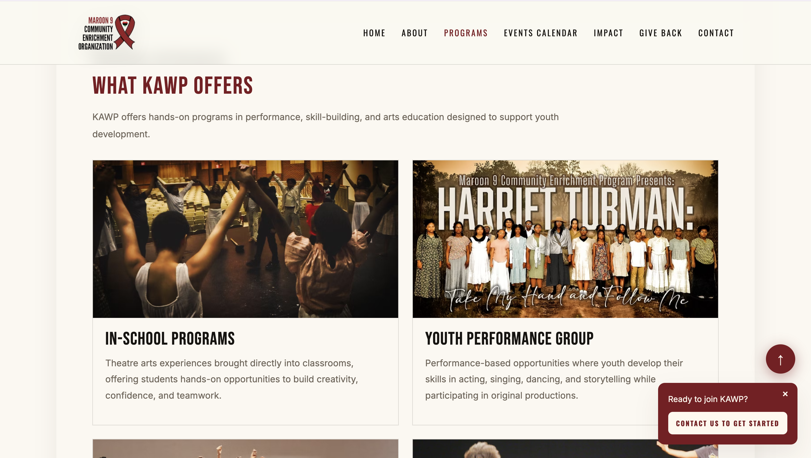
Kids Acting With Purpose.
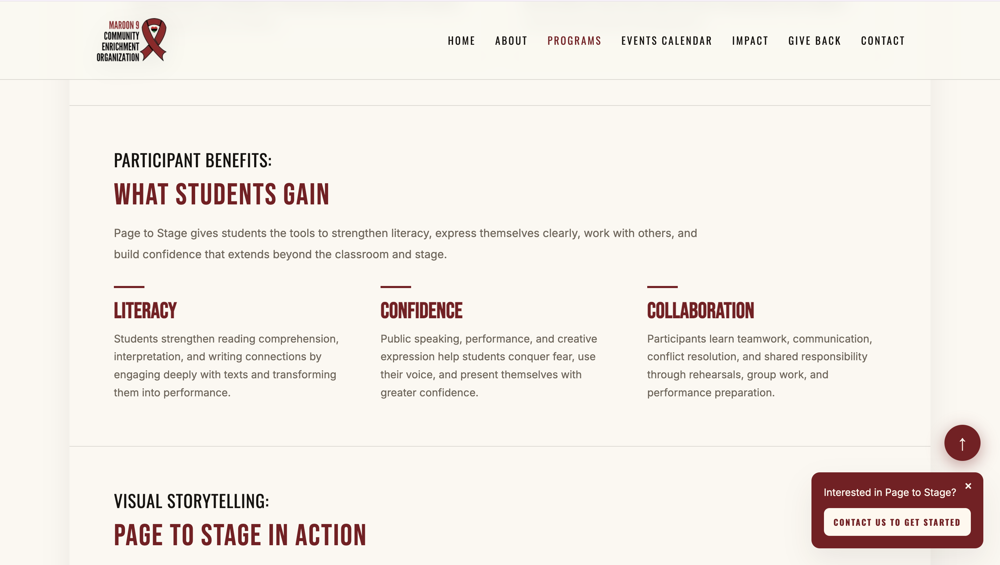
Page to Stage.
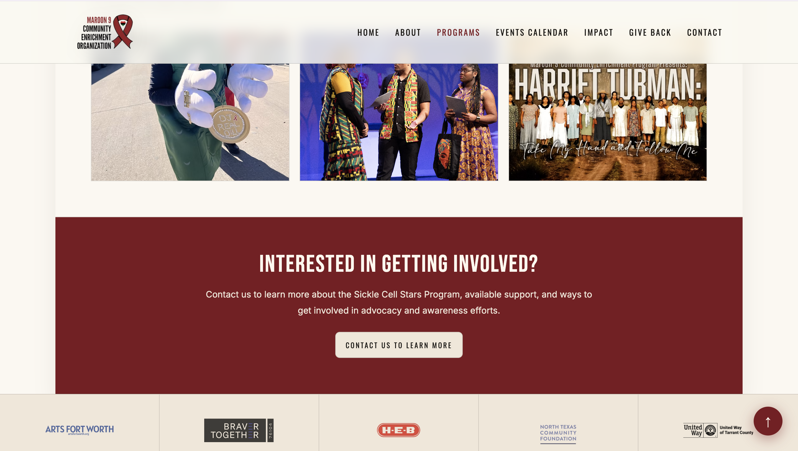
Sickle Cell Stars.
After selecting a program, users are taken to a dedicated detail page. Each page follows a consistent structure that includes a program overview, key offerings, participant outcomes, visual storytelling, and a clear call-to-action. While the layout remains consistent, the content is tailored to each program's goals and audience.
Maintaining a consistent structure across all three pages helps users compare programs more easily because key information appears in familiar locations. It also created a reusable design pattern that streamlined development and ensured consistency across the experience. Each page includes a customized floating CTA that aligns with the specific program being viewed.
Usability Testing
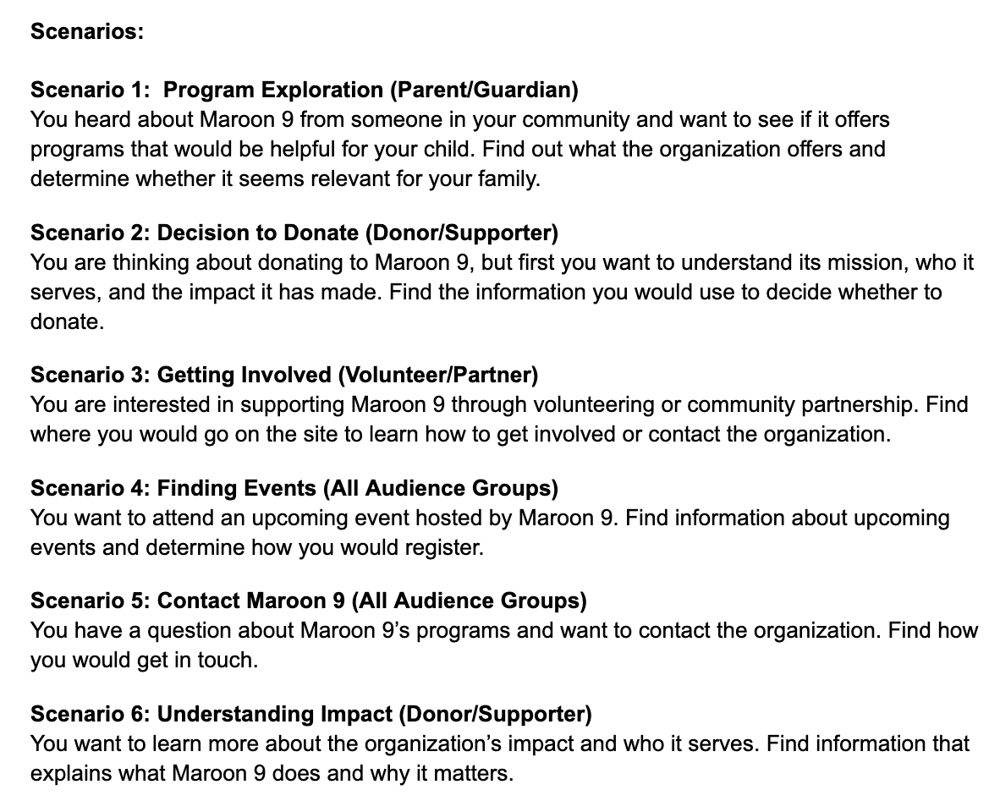
Six participants, six scenarios each — covering programs, donations, volunteering, events, contact, and impact.
After developing the website, we conducted usability testing with six participants representing Maroon 9's primary audiences: parents and guardians, donors and supporters, and volunteers and community partners. Each participant completed six task-based scenarios while we observed behavior, documented issues, and prioritized findings by severity.
What We Found
Donate was hard to find. Multiple users scrolled past the nav or relied on the footer to locate the Donate page. It needed to be in primary navigation and surfaced earlier on content pages.
Program cards did not appear interactive.Users viewed the cards but were not confident they were clickable until hovering. Stronger visual cues and full-card interaction were needed.
Important actions were easy to miss. On the Volunteer and Programs pages, key calls-to-action appeared too far down the page, causing some users to miss them before leaving or changing direction.
Some pages felt text-heavy. Events and Impact in particular required too much reading to locate key information. Users wanted to scan, not read.
About vs. Impact caused confusion. Several users weren't sure which section to visit for mission information vs. impact data. The distinction wasn't clear from the labels alone.
Iteration & Improvements
Every finding from usability testing went directly into a fix. We treated the test as a diagnostic tool, not a final grade.
| Usability Finding | What We Changed |
|---|---|
| Donate actions were difficult to find | Added Donate to primary navigation; surfaced donation CTAs earlier on Impact and homepage — not just at the bottom |
| Program cards didn't feel clickable | Made entire cards clickable with a hover lift effect; not just the button inside — so clicking anywhere on the card works as expected |
| Important CTAs were positioned too low | Moved primary CTAs higher on Volunteer and Programs pages; added the floating CTA for persistent visibility throughout scrolling |
| Content felt dense and required too much scrolling | Improved section breaks, reduced paragraph length, and replaced text-heavy blocks with scannable cards and visual hierarchy |
| Confusion between About and Impact sections | Clarified purpose of each section through clearer page headers and simplified navigation labels |
| Floating UI competed with mobile hamburger nav | Hid floating interface elements when the mobile navigation menu is open to prevent competing actions on smaller screens. |
Final Outcome
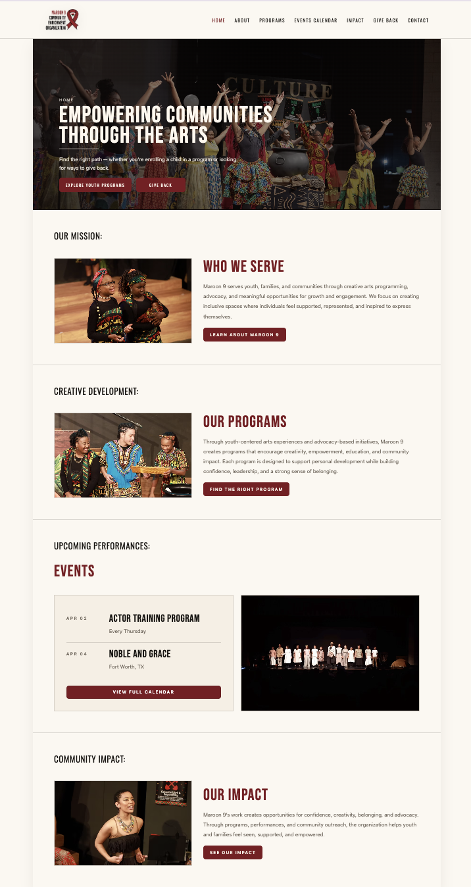
Final homepage.
Final Programs page.
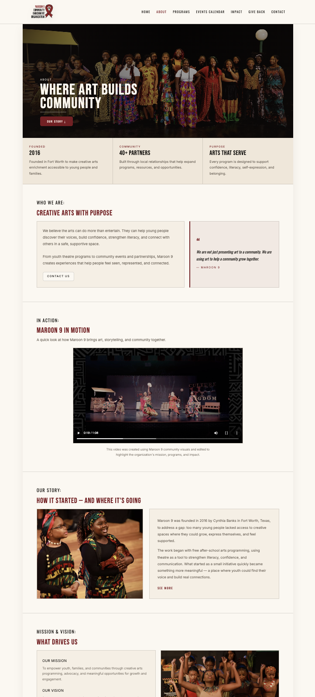
Final About page.
The redesign delivered a goal-oriented, mobile-responsive website built entirely from scratch. The new structure introduced dedicated program pages, clearer information hierarchy, consistent interaction patterns, and visible pathways for key actions across the site.
Program Discovery
Three dedicated program pages let users compare options and navigate to detailed information — something the original site made impossible.
Engagement Pathways
Donate, volunteer, and contact pathways are visible throughout the site — not hidden in a footer or linked off-site.
Mission Clarity
The sickle cell advocacy mission is clearly communicated throughout, with a dedicated Sickle Cell Stars program page built for the first time.
Mobile Experience
Fully responsive with coordinated mobile navigation and context-aware floating UI that never gets in the way.
The project is currently under review alongside a parallel redesign created by a second team. Maroon 9 leadership plans to combine selected elements from both solutions into the organization's future website, giving this work a potential path to implementation.
Reflection
Leading a real client project Working with a real nonprofit client taught me how to balance organizational goals, team perspectives, technical constraints, and user needs at the same time. Unlike a classroom exercise, decisions had real stakeholders and real consequences, which pushed me to communicate more clearly and justify design choices with evidence.
Designing and building Because I was involved in both design and front-end development, I gained a deeper understanding of how interaction decisions translate into implementation. Building features like the floating CTA system and responsive navigation reinforced the importance of considering edge cases, user states, and technical feasibility early in the design process.
Small details create better experiences.Throughout this project, I learned that effective design is often the result of many small decisions working together. From navigation labels and content organization to CTA placement and interaction behavior, every detail influences how easily users can accomplish their goals. Moving forward, I want to continue creating experiences that balance user needs with stakeholder goals while paying close attention to the details that make an experience feel intuitive and trustworthy.
What I'd do differently: If I were to revisit the project, I would introduce usability testing earlier in the process. While testing the coded website revealed valuable issues, earlier testing during wireframing could have helped identify navigation and content-clarity problems before development began.